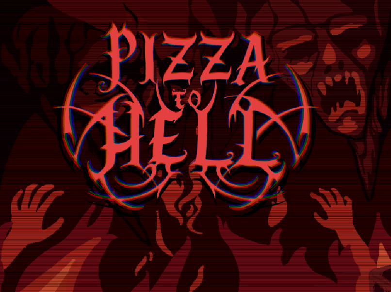
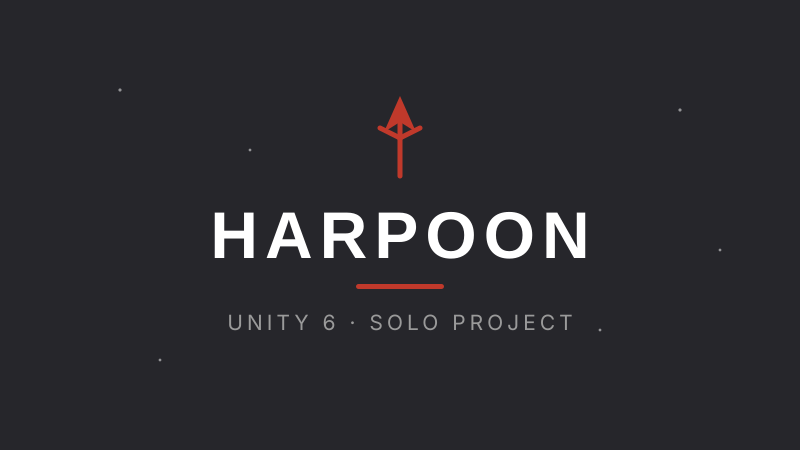

01
Gameplay Design & Programming
I design and build the systems players feel, from player controllers and enemy AI to custom A* navigation and surface-crawling movement, in C# and Unity.
Designer and C# developer with a strong foundation in object-oriented development. I shipped a game on Steam with 25,000+ copies and now lead a 12 person team as technical lead, with AI tools as a natural part of my flow.
Four things I am reliably good at, drawn from shipped games and real studio work.
I design and build the systems players feel, from player controllers and enemy AI to custom A* navigation and surface-crawling movement, in C# and Unity.
Object-oriented development with clean design patterns. I owned a shipped game's technical foundation: architecture decisions, version control and build pipeline.
I lead a 12 person team as technical lead and shipped a game as CTO. I set the workflow, run sync meetings and keep systems modular and integration ready.
Structured playtesting with clear repro steps and recorded playthroughs. I write actionable bug reports that speed up prioritization for the dev leads.
Most of these were built with teams of friends from uni. Hover any card for the focus, tools and screenshots.

Role: Lead designer and programmer (CTO) on an 11 person team. I led programming and design from first prototype to release, and owned the technical foundation: architecture decisions, version control (Perforce) and build pipeline.

Role: Technical lead and designer on my own company, Pizza to Hell HB. I lead a 12 person team as work lead, setting the workflow, running sync meetings and keeping systems modular and integration ready. I built the finisher system from scratch with clean integration between team owned modules, plus an event driven footstep system.

Role: Solo project. I built the player controller and enemy AI with custom A* navigation and surface-crawling movement in Unity 6.

Role: Lead designer and programmer. Designed the aiming and throwing mechanic, plus animation implementation and Unity configuration.

Role: Lead designer and programmer. Designed player movement, several traps and animation cues.

Role: UX designer and programmer. Designed enemy behaviour and the sound detection system, plus music production.

Role: Designer and programmer. Handled design and post production, including screen shake, feedback and music.

I am a recent graduate with a strong foundation in C# and object-oriented development. I like owning systems end to end, from architecture and gameplay code to polish and iteration, and I care about shipping finished results that hold together.
I shipped a game on Steam with 25,000+ copies and currently lead a 12 person team as technical lead. I work with AI tools as a natural part of my development flow, and a C# background makes the step to other languages short. I hold a BSc in Media Technology with a focus on game development.
Where I have worked and what I focused on.
Quality assurance on an unreleased title produced under a publisher in collaboration with several studios (under NDA), where Odd Raven owns the game's functionality and gameplay.
Led operations and external communication for LVL, Södertörn University's game development student association.
Remote analyst role carried out with a high level of independence and responsibility.
From the people I have shipped games with.
You kept us together and focused on getting the work done. You motivated me and made me believe in myself.
Your skills, ideas, and way of combining ideas prevented conflict, which made me feel safe and secure.
Prefer the short version? Download or view the PDF.
I am open to designer and developer roles, in games and beyond. Feel free to reach out, I would love to connect.
Uppsala, Sweden